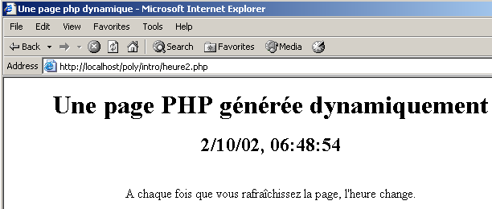
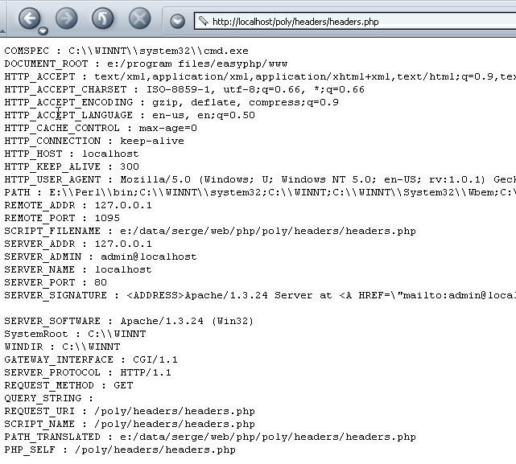
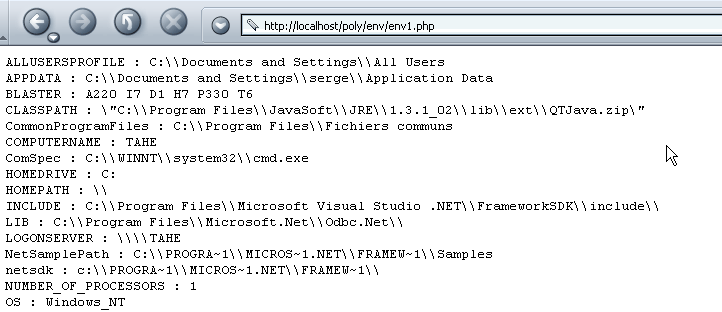
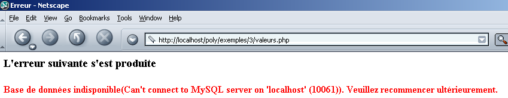
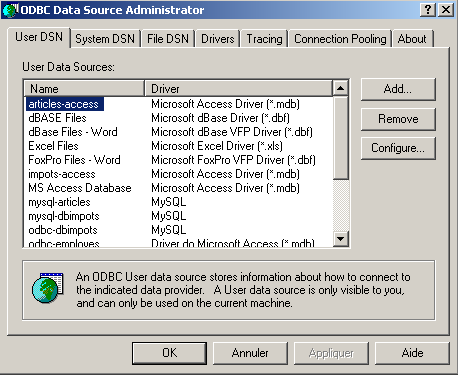
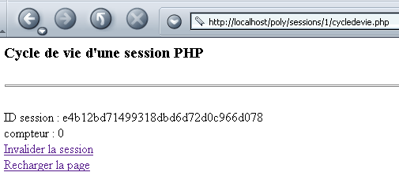
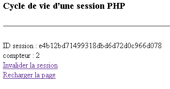
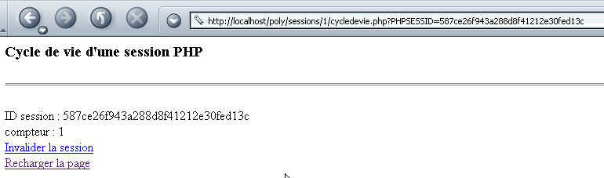
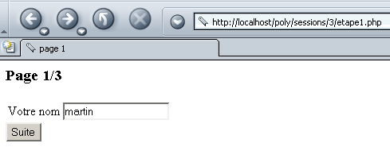

3. PHP 网页编程入门
3.1. PHP编程
需要指出的是，PHP 是一种独立的编程语言，虽然它主要用于 Web 应用程序的开发，但也适用于其他场景。 可在 http://shiva.istia.univ-angers.fr/~tahe/pub/php/php.pdf 获取的文档《PHP 实例解析》介绍了该语言的基础知识。 本文假设读者已掌握这些基础知识。下面通过一个简单示例，演示在 Windows 系统下运行 PHP 程序的步骤。以下代码已保存为 coucou.php。
该程序在 Windows 的 DOS 窗口中运行：
dos>"e:\program files\easyphp\php\php.exe" coucou.php
X-Powered-By: PHP/4.3.0-dev
Content-type: text/html
coucou
需要注意的是，解释器 PHP 默认发送：
- 解析器 PHP 即 php.exe，通常位于软件安装目录的 <php> 文件夹中。
- HTTP 的 X-Powered-By 头部和 Content-type：
- 将 HTTP 头部与文档其余部分分隔开的空行
- 此处由函数生成的文档文本
3.2. 解释器 PHP 的配置文件
解释器 PHP 的行为由名为 php.ini 的配置文件设定，在 Windows 系统中，该文件存储于 Windows 系统目录下。 这是一个相当大的文件，因为在 Windows 系统下，针对 PHP 的 4.2 版本，该文件有近 1000 行，所幸其中四分之三都是注释。让我们来看看 PHP 的几个配置属性：
允许在 <? > 标签之间包含指令。在 off 中，应将其包含在 <?php ... > 之间 | |
在 on 中，允许使用 ASP（Active Server Pages）技术所采用的 <% =variable %> 语法 | |
允许发送 HTTP 标头：X-Powered-By: PHP/4.3.0-dev。在 off 中，该标头已被删除。 | |
确定错误跟踪的范围。在此，除运行时警告（~E_NOTICE）外，所有错误（E_ALL）都将被报告 | |
将错误放入发送给客户端的 HTML 数据流中（on）。因此这些错误将在浏览器中显示。建议将此选项设置为 off。 | |
错误将存储在文件中 | |
将最近发生的错误存储在变量 $php_errormsg 中 | |
设置错误记录文件（如果 log_errors=on） | |
在 on 中，部分变量变为全局变量。被视为安全漏洞。 | |
默认生成标头 HTTP：Content-type: text/html | |
将要搜索的目录列表，用于查找 include 或 require 指令所需的文件 | |
用于保存当前不同会话记录文件的目录。相关磁盘即安装 PHP 的磁盘。此处 /temp 指代 e:\temp |
该配置文件会影响所编写 PHP 程序的可移植性。 实际上，如果一个Web应用程序需要获取Web表单中字段C的值，它可以通过多种方式实现，这取决于配置变量register_globals的值是on还是off：
- off： 该值将由 $HTTP_GET_VARS["C"] 或 _GET["C"] 或 $HTTP_POST_VARS["C"] 或 $_POST["C"]，具体取决于客户用于发送表单值的
- on：同上，另加 $C，因为字段 C 的值已被赋值给一个与该字段同名的全局变量
如果开发人员编写程序时使用 $C 这种写法，因为其使用的 Web/PHP 服务器将变量 register_globals 映射为 on， 那么当该程序移植到另一个Web/PHP服务器上时，如果该服务器上该变量的值是off，程序将无法运行。因此，编写程序时应尽量避免使用依赖于Web/PHP服务器配置的功能。
3.3. 运行时配置 PHP
为提高 PHP 程序的可移植性，可自行设置 PHP 中的某些配置变量。这些变量仅在程序运行期间且仅针对该程序进行修改。在此过程中，有两个函数非常有用：
返回配置变量 confVariable 的值 | |
用于设置配置变量 confVariable 的值 |
以下是一个设置配置变量 track_errors 值的示例：
<?php
// 配置变量值 track_errors
echo "track_errors=".ini_get("track_errors")."\n";
// 更改此值
ini_set("track_errors","off");
// 验证
echo "track_errors=".ini_get("track_errors")."\n";
?>
运行后，得到以下结果：
E:\data\serge\web\php\poly\intro>"E:\Program Files\EasyPHP\php\php.exe" conf1.php
Content-type: text/html
track_errors=1
track_errors=off
配置变量 track_errors 的初始值为 1（~on）。将其修改为 off。 需要注意的是，如果我们的应用程序需要依赖某些配置变量的值，那么在程序内部初始化这些变量是较为稳妥的做法。
3.4. 示例的运行环境
本讲义中的示例将在以下配置下运行：
- Windows 2000 系统下的 PC
- Apache 1.3 服务器
- PHP 4.3
Apache 服务器的配置在文件 httpd.conf 中完成。 以下几行代码指示 Apache 将 PHP 加载为 Apache 的内置模块，并将所有指向带有特定后缀（包括 .php）文档的请求转发给 PHP 解释器。 这是我们将用于 PHP 程序的默认后缀。
LoadModule php4_module "E:/Program Files/EasyPHP/php/php4apache.dll"
AddModule mod_php4.c
AddType application/x-httpd-php .phtml .pwml .php3 .php4 .php .php2 .inc
此外，我们为 Apache 定义了一个通配符别名：
Alias "/poly/" "e:/data/serge/web/php/poly/"
<Directory "e:/data/serge/web/php/poly">
Options Indexes FollowSymLinks Includes
AllowOverride All
#命令 allow,deny
Allow from all
</Directory>
我们将路径 e:/data/serge/web/php/poly 命名为 <poly>。 如果我们想通过浏览器向 Apache 服务器请求 doc.php 文档，我们将使用 URL http://localhost/poly/doc.php。 Apache 服务器将识别 URL 中的别名 poly，并据此将 URL /poly/doc.php 关联到文档 <poly>\doc.php。
3.5. 第一个示例
让我们编写一个简单的 Web/PHP 应用程序。以下文本已保存到文件 heure.php 中：
<html>
<head>
<title>Une page php dynamique</title>
</head>
<body>
<center>
<h1>Une page PHP générée dynamiquement</h1>
<h2>
<?php
$maintenant=time();
echo date("j/m/y, h:i:s",$maintenant);
?>
</h2>
<br>
A chaque fois que vous rafraîchissez la page, l'heure change.
</body>
</html>
如果我们使用浏览器访问该页面，将得到以下结果：

页面的动态部分由以下代码生成：
具体发生了什么？浏览器请求了 URL http://localhost/poly/intro/heure.php。 Web 服务器（本例中为 Apache）接收到了该请求，并根据请求文档的 .php 后缀检测到，应将该请求转发给解释器 PHP。 该解释器随后分析文档 heure.php，并执行位于 <?php> 标签之间的所有代码段，并将它们替换为由指令 PHP、echo 或 print 生成的代码行。 因此，解释器 PHP 将执行上述代码段，并将其替换为由指令 echo 生成的行：
一旦所有 PHP 代码段执行完毕，文档 PHP 便会转化为一个简单的文档 HTML，随后该文档会被发送给客户端。
应尽可能避免将代码 PHP 与代码 HTML 混合使用。为此，可以将之前的应用程序重写为如下形式：
<!-- 代码 PHP -->
<?php
// 获取当前时间
$maintenant=time();
$maintenant=date("j/m/y, h:i:s",$maintenant);
?>
<!-- 代码 HTML -->
<html>
<head>
<title>Une page php dynamique</title>
</head>
<body>
<center>
<h1>Une page PHP générée dynamiquement</h1>
<h2>
<?php echo $maintenant ?>
</h2>
<br>
A chaque fois que vous rafraîchissez la page, l'heure change.
</body>
</html>
在浏览器中显示的结果完全相同：

第二个版本优于第一个，因为代码中PHP的数量比HTML少。 这样页面结构就更加清晰了。我们可以更进一步，将代码 PHP 和代码 HTML 分别存放在两个不同的文件中。代码 PHP 存储在文件 heure3.php 中：
<!-- 代码 PHP -->
<?php
// 获取当前时间
$maintenant=time();
$maintenant=date("j/m/y, h:i:s",$maintenant);
// 显示响应
include "heure3-page1.php";
?>
代码 HTML 存储在文件 heure3-page1.php 中：
<!-- 代码 HTML -->
<html>
<head>
<title>Une page php dynamique</title>
</head>
<body>
<center>
<h1>Une page PHP générée dynamiquement</h1>
<h2>
<?php echo $maintenant ?>
</h2>
<br>
A chaque fois que vous rafraîchissez la page, l'heure change.
</body>
</html>
当浏览器请求文档 heure3.php 时，该文档将由解释器 PHP 加载并解析。遇到行
解释器将把文件 heure3-page1.php 包含到 heure3.php 的源代码中并执行它。因此，效果就好像我们拥有以下 PHP 代码一样：
<!-- 代码 PHP -->
<?php
// 获取当前时间
$maintenant=time();
$maintenant=date("j/m/y, h:i:s",$maintenant);
?>
<!-- 代码 HTML -->
<html>
<head>
<title>Une page php dynamique</title>
</head>
<body>
<center>
<h1>Une page PHP générée dynamiquement</h1>
<h2>
<?php echo $maintenant ?>
</h2>
<br>
A chaque fois que vous rafraîchissez la page, l'heure change.
</body>
</html>
得到的结果与之前相同：

后续将采用将代码 PHP 和 HTML 分别放入不同文件的方案。该方案具有以下优势：
- 发送给客户端的页面结构不会被 PHP 代码所淹没。因此，这些页面可以由具备图形设计能力但对 PHP 了解有限的“网页设计师”进行维护。
- PHP代码作为客户端请求的“前端”存在。其目的是计算页面所需的数据，并将其作为响应返回给客户端。
然而，该方案存在一个缺点：它需要加载多个文档，而非仅需加载单个文档，这可能导致性能下降。
3.6. 获取 Web 客户端发送的参数
3.6.1. 通过 POST
考虑以下表单，用户需提供两项信息：姓名和年龄。

当用户填写完字段 Nom 和 Age 后，会点击类型为 submit 的按钮 Envoyer。 随后，表单中的值会被发送至服务器。服务器会将表单发回，并附带一个列出了其接收到的值的数组：

浏览器向下一个应用程序 nomage.php 请求表单：
<?php
// 是否获得了预期的参数？
$post=isset($_POST["txtNom"]) && isset($_POST["txtAge"]);
if($post){
// 获取客户端“发送”的参数 txtNom 和 txtAge
$nom=$_POST["txtNom"];
$age=$_POST["txtAge"];
} else {
$nom="";
$age="";
}//if
// 显示页面
include "nomage-p1.php";
?>
说明：
- 一个名为“field”的表单字段（HTML）可以通过方法 GET 或方法 POST 发送至服务器。如果通过方法 GET 发送， 服务器可在变量 $_GET["champ"] 中获取该字段；若若数据由方法 POST 发送，
- 可通过函数 isset(数据) 检测数据是否存在，若数据存在则返回 true，否则返回 false。
- nomage.php 应用程序构建了三个变量： $nom 用于表单名称，$age 用于年龄，$post 用于指示是否已“提交”值。 这三个变量会被传递到页面 nomage-p1.php。需要注意的是，尽管该页面参与了向客户端返回响应的生成过程，但客户端对此并不知情。对客户端而言，响应来自应用程序 nomage.php。
- 当客户端首次调用应用程序 nomage.php 时，会得到 $post 的错误响应。这是因为在首次调用时，没有表单值被传递给服务器。
页面 nomage-p1.php 内容如下：
<html>
<head>
<title>Formulaire web</title>
</head>
<body>
<center>
<h3>Un formulaire Web</h3>
<h4>Récupération des valeurs des champs d'un formulaire</h4>
<hr>
<form name="frmPersonne" method="post">
<table>
<tr>
<td>Nom</td>
<td><input type="text" value="<?php echo $nom ?>" name="txtNom" size="20"></td>
<td>Age</td>
<td><input type="text" value="<?php echo $age ?>" name="txtAge" size="3"></td>
<tr>
</table>
<input type="submit" name="cmdEffacer" value="Envoyer">
</form>
</center>
<hr>
<?php
// 是否有提交的值？
if ($post) {
?>
<h4>Valeurs récupérées</h4>
<table border="1">
<tr>
<td>Nom</td><td><?php echo $nom ?></td>
<td width="10"></td>
<td>Age</td><td><?php echo $age ?></td>
<tr>
</table>
<?php } ?>
</body>
</html>
应用程序 nomage-p1.php 包含表单 frmPersonne。该表单由以下标签定义：
由于该标签的 action 属性未定义，浏览器将表单数据传输给 URL，而该标签正是浏览器为获取此数据所调用的 c.a.d。 应用程序 nomage.php。
让我们区分调用 nomage.php 应用程序的两种情况：
- 这是用户首次调用该应用程序。因此，应用程序 nomage.php 调用应用程序 nomage-p1.php 时，向其提供了以下值 ($nom,$age,$post)=("","",false)。随后，应用程序 nomage-p1.php 显示一个空表单。
- 用户填写表单并使用按钮 Envoyer（类型为 submit）。 表单的值（txtNom、txtAge）随后被“提交”（method="post" 在 <form> 中）至应用程序 nomage.php （<form>中未定义属性action）。应用程序nomage.php计算（$nom、$age、$post)=(txtNom,txtAge,true)，并将结果传递给应用程序 nomage-p1.php，该应用程序随后会显示一个已预填好的表单以及检索到的值表。
3.6.2. 通过 GET
如果表单值通过 GET 传递给服务器，则应用程序 nomage.php 将变为后续的应用程序 nomage2.php：
<?php
// 是否收到了预期的参数？
$get=isset($_GET["txtNom"]) && isset($_GET["txtAge"]);
if($get){
// 客户端获取参数 txtNom 和 txtAge "GETTés"
$nom=$_GET["txtNom"];
$age=$_GET["txtAge"];
} else {
$nom="";
$age="";
}//if
// 显示页面
include "nomage-p2.php";
?>
应用程序 nomage-p2.php 与应用程序 nomage-p1.php 完全相同，仅在以下细节上有所不同：
- form 标签已修改：
- 该应用程序现在获取的变量是 $get，而不是 $post：
在运行时，当表单中的值被输入并发送至服务器时，浏览器会在其 URL 字段中反映出这些值是通过 GET 方法发送的：

3.7. 获取Web客户端发送的HTTP头部
当浏览器向 Web 服务器发出请求时，会向其发送若干 HTTP 头部。有时获取这些头部信息会很有帮助。首先可以借助关联数组 $_SERVER。 该数组包含由Web服务器提供的各种信息，其中包括客户端提供的HTTP头部。请看以下程序，它会显示$_SERVER数组中的所有值：
<?php
// 显示与Web服务器相关的变量
// 发送纯文本
header("Content-type: text/plain");
// 遍历关联数组 $_SERVER
reset($_SERVER);
while (list($clé,$valeur)=each($_SERVER)){
echo "$clé : $valeur\n";
}//while
?>
我们将此代码保存为 headers.php，并使用浏览器访问 URL：

我们获取了一些信息，其中包括浏览器发送的 HTTP 头部。这些是与以 HTTP 开头的键相关的值。下面详细说明上述获取的部分信息：
Web 客户端支持的文档类型 | |
文档中支持的字符类型 | |
文档支持的编码类型 | |
文档支持的语言类型 | |
与服务器的连接类型。Keep-Alive：服务器在返回响应后应保持连接 | |
? 连接保持的最大时长 | |
被客户端查询的主机 | |
客户端标识 | |
客户端地址 | |
客户使用的通信端口 | |
服务器使用的协议 HTTP | |
客户端使用的查询方法（GET 或 POST） | |
在请求的 URL 之后放置的 ?param1=val1¶m2=val2&... 请求（方法 GET） |
通过对前面的程序代码稍作修改，我们可以仅提取 HTTP 头部信息：
<?php
// 显示与Web服务器相关的变量
// 发送纯文本
header("Content-type: text/plain");
// 遍历关联数组 $_SERVER
reset($_SERVER);
while (list($clé,$valeur)=each($_SERVER)){
// HTTP 头部？
if(strtolower(substr($clé,0,4))=="http")
echo substr($clé,5)." : $valeur\n";
}//while
?>
浏览器中显示的结果如下：

如果需要精确的HTTP标头，可以写成例如$_SERVER["HTTP_ACCEPT"]。
3.8. 获取环境信息
Web/PHP 服务器运行在一个特定环境中，我们可以通过 $_ENV 数组来了解该环境，该数组记录了运行环境的各种特征。考虑以下 env1.php 应用程序：
<?php
// 显示与Web服务器相关的变量
// 发送纯文本
header("Content-type: text/plain");
// 遍历关联数组 $_ENV
reset($_ENV);
while (list($clé,$valeur)=each($_ENV)){
echo "$clé : $valeur\n";
}//while
?>
它在浏览器中显示如下结果（局部视图）：

例如上文所示，Web/PHP 服务器在 Windows 系统下运行。
3.9. 示例
3.9.1. 表单动态生成 - 1
我们以生成一个仅含一个控件（下拉列表）的表单为例。该下拉列表的内容通过从数组中获取值动态构建而成。实际上，这些值通常来自数据库。表单如下所示：

如果在上述示例中执行 Envoyer，将得到以下响应：

初始表单生成的代码 HTML 如下所示：
<html>
<head>
<title>Génération de formulaire</title>
</head>
<body>
<h2>Choisissez un nombre</h2>
<hr>
<form name="frmvaleurs" method="post" action="valeurs.php">
<select name="cmbValeurs" size="1">
<option>un</option>
<option>deux</option>
<option>trois</option>
<option>quatre</option>
<option>cinq</option>
<option>six</option>
<option>sept</option>
<option>huit</option>
<option>neuf</option>
<option>dix</option>
</select>
<input type="submit" value="Envoyer" name="cmdEnvoyer">
</form>
</body>
</html>
应用程序 PHP 由主页面 valeurs.php 组成，该页面既用于获取初始表单（值列表），也用于处理其中的值并提供响应（所选值）。该应用程序生成两个不同的页面：
- 初始表单页面，由程序 valeurs-p1.php 生成
- 提供给用户的响应页面，由程序 valeurs-p2.php 生成
应用程序 valeurs.php 如下：
<?php
// 值数组
$valeurs=array("un","deux","trois","quatre","cinq","six","sept","huit","neuf","dix");
// 是否获得预期参数
$requêteVide=! isset($_POST["cmbValeurs"]);
// 获取用户选择
if ($requêteVide){
// 初始请求
include "valeurs-p1.php";
}else{
// 对 POST 的响应
$choix=$_POST["cmbValeurs"];
include "valeurs-p2.php";
}
?>
它定义了值表，并在客户端请求为空时调用 valeurs-p1.php 生成初始表单，或在存在有效请求时调用 valeurs-p2.php 生成响应。程序 valeurs1-php 如下：
<html>
<head>
<title>Génération de formulaire</title>
</head>
<body>
<h2>Choisissez un nombre</h2>
<hr>
<form name="frmvaleurs" method="post" action="valeurs.php">
<select name="cmbValeurs" size="1">
<?php
for($i=0;$i<count($valeurs);$i++){
echo "<option>$valeurs[$i]</option>\n";
}//用于
?>
</select>
<input type="submit" value="Envoyer" name="cmdEnvoyer">
</form>
</body>
</html>
下拉列表的值列表是根据由 valeurs.php 传输的 $valeurs 数组动态生成的。程序 valeurs-p2.php 生成响应：
<html>
<head>
<title>réponse</title>
</head>
<body>
<h2>Vous avez choisi le nombre <?php echo $choix ?></h2>
</body>
</html>
这里，我们仅显示变量 $choix 的值，该值同样由 valeurs.php 传递而来。
3.9.2. 表单的动态生成 - 2
我们沿用前面的示例，并按以下方式进行修改。生成的表单仍然是相同的：

响应是否不同：

在响应中，我们会返回表单，并在下方标注用户选择的数字。此外，该数字即为响应中显示的列表里所选中的数字。
valeurs.php的代码如下：
<?php
// 配置
ini_set("register_globals","off");
// 值表
$valeurs=array("un","deux","trois","quatre","cinq","six","sept","huit","neuf","dix");
// 获取用户的选项（如有）
$choix=$_POST["cmbValeurs"];
// 显示结果
include "valeurs-p1.php";
?>
请注意，此处已特意配置了 PHP，以确保不存在全局变量。这通常是一项明智的预防措施，因为全局变量会引发安全问题。 另一种做法是初始化所有使用的变量。这将“覆盖”任何同名的全局变量。
表单页面由 valeurs-p1.php 显示：
<html>
<head>
<title>Génération de formulaire</title>
</head>
<body>
<h2>Choisissez un nombre</h2>
<hr>
<form name="frmvaleurs" method="post" action="valeurs.php">
<select name="cmbValeurs" size="1">
<?php
for($i=0;$i<count($valeurs);$i++){
// 如果当前选项与用户选择一致，则选中该选项
if (isset($choix) && $choix==$valeurs[$i])
echo "<option selected>$valeurs[$i]</option>\n";
else echo "<option>$valeurs[$i]</option>\n";
}//for
?>
</select>
<input type="submit" value="Envoyer" name="cmdEnvoyer">
</form>
<?php
// 下一页
if(isset($choix)){
echo "<hr>\n";
echo "<h3>Vous avez choisi le nombre $choix</h3>\n";
}
?>
</body>
</html>
该页面生成程序依赖于由程序 valeurs.php 传递的变量 $choix。 这里需要注意的是，页面的 HTML 结构开始受到 PHP 代码的严重“污染”。前端程序 valeurs.php 可以承担更多工作，如下面的新版本所示：
<?php
// 配置
ini_set("register_globals","off");
// 值表
$valeurs=array("un","deux","trois","quatre","cinq","six","sept","huit","neuf","dix");
// 获取用户的可能选择
$choix=$_POST["cmbValeurs"];
// 计算待显示的值列表
$HTMLvaleurs="";
for($i=0;$i<count($valeurs);$i++){
// 如果当前选项与用户选择一致，则选中该选项
if (isset($choix) && $choix==$valeurs[$i])
$HTMLvaleurs.="<option selected>$valeurs[$i]</option>\n";
else $HTMLvaleurs.="<option>$valeurs[$i]</option>\n";
}//for
// 计算页面的第二部分
$HTMLpart2="";
if(isset($choix)){
$HTMLpart2="<hr>\n";
$HTMLpart2.="<h3>Vous avez choisi le nombre $choix</h3>\n";
}//if
// 显示结果
include "valeurs-p2.php";
?>
该页面现由以下程序 valeurs-p2.php 生成：
<html>
<head>
<title>Génération de formulaire</title>
</head>
<body>
<h2>Choisissez un nombre</h2>
<hr>
<form name="frmvaleurs" method="post" action="valeurs.php">
<select name="cmbValeurs" size="1">
<?php
// 显示值列表
echo $HTMLvaleurs;
?>
</select>
<input type="submit" value="Envoyer" name="cmdEnvoyer">
</form>
<?php
// 显示第2部分
echo $HTMLpart2;
?>
</body>
</html>
代码 HTML 现已去除了 PHP 代码中的大部分内容。 不过，让我们回顾一下将系统拆分为前端程序（负责分析和处理客户请求）与仅负责显示由前端传输的数据所配置的页面的后端程序的目的：这是为了将 PHP 开发人员的工作与平面设计师的工作区分开来。 开发人员负责前端开发，而网页设计师则负责网页设计。在新版本中，例如，网页设计师无法再处理页面的第2部分，因为他无法访问该部分的代码。而在旧版本中，他可以做到这一点。 因此，这两种方法都并非完美。
3.9.3. 表单动态生成 - 3
我们继续探讨前文提到的问题，但这次数据值来自数据库。在本例中，该数据库名为 MySQL：
- 数据库名为 dbValeurs
- 其所有者为 admDbValeurs，密码为 mdpDbValeurs
- 该数据库仅包含一个名为 tvaleurs 的表
- 该表仅有一个名为“value”的整数字段
dos> mysql --database=dbValeurs --user=admDbValeurs --password=mdpDbValeurs
mysql> show tables;
+---------------------+
| Tables_in_dbValeurs |
+---------------------+
| tvaleurs |
+---------------------+
1 row in set (0.00 sec)
mysql> describe tvaleurs;
+--------+---------+------+-----+---------+-------+
| Field | Type | Null | Key | Default | Extra |
+--------+---------+------+-----+---------+-------+
| valeur | int(11) | | | 0 | |
+--------+---------+------+-----+---------+-------+
mysql> select * from tvaleurs;
+--------+
| valeur |
+--------+
| 0 |
| 1 |
| 2 |
| 3 |
| 4 |
| 6 |
| 5 |
| 7 |
| 8 |
| 9 |
+--------+
10 rows in set (0.00 sec)
在使用数据库的应用程序中，通常包含以下步骤：
- 连接到 SGBD
- 向 SGBD 数据库发送查询 SQL
- 处理这些查询的结果
- 关闭与 SGBD 的连接
步骤2和3会反复执行，只有在数据库操作结束时才会关闭连接。对于任何有过交互式数据库操作经验的人来说，这是一种相对典型的流程。 下表给出了使用 SGBD 和 MySQL 执行这些不同操作的 PHP 指令：
$connexion=mysql_pconnect($hote,$user,$pwd) $connexion=mysql_connect($hote,$user,$pwd) $hote：运行 SGBD 和 MySQL 的机器的互联网名称。 实际上，可以与远程的 SGBD MySQL 进行协作。 $user：SGBD MySQL 已知用户的名称 $pwd：其密码 $connexion：已建立连接 mysql_pconnect 与 SGBD、MySQL 建立了持久连接。 此类连接在脚本结束时不会关闭，而是保持打开状态。因此，当需要与 SGBD 建立新连接时，PHP 会查找属于同一用户的现有连接。若找到，则直接使用该连接，从而节省时间。 mysql_connect 创建的是非持久性连接，因此在与 SGBD 和 MySQL 的操作完成后，该连接会被关闭。 | |
$résultats=mysql_db_query($base,$requête,$connexion) $base：我们将要处理的基于 MySQL 的数据集 $requête：针对 SQL 的查询（插入、删除、更新、查询等） $connexion：连接到 SGBD MySQL $résultats：查询结果——根据查询是SELECT还是更新操作（插入、更新、删除等）而有所不同 | |
$résultats=mysql_db_query($base,"select ...",$connexion) SELECT 语句的结果是一个表格，即一组行和列。可以通过 $résultats 访问该表格。 $ligne=mysql_fetch_row($résultats) 读取表中的一行，并将其以数组形式存入 $ligne 中。 因此，$ligne[i] 是所读取行中的第 i 列。可以反复调用函数 mysql_fetch_row。 每次调用时，它都会从表 $résultats 中读取一行。当到达表尾时，该函数返回值 false。因此，表 $résultats 可以按以下方式进行处理： while($行=mysql_fetch_row($结果集)){ // 处理当前行 $行 }//while | |
$résultats=mysql_db_query($base,"插入 ...",$connexion) 值 $résultats 根据操作成功或失败而返回真或假。如果成功，函数 mysql_affected_rows 可用于获取更新操作修改的行数。 | |
mysql_close($连接) $connexion：连接到 SGBD MySQL |
前端代码 valeurs.php 变为如下：
<?php
// 配置
ini_set("register_globals","off");
ini_set("display_errors","off");
ini_set("track_errors","on");
// 值表
list($erreur,$valeurs)=getValeurs();
// 是否发生错误？
if($erreur){
// 显示错误页面
include "valeurs-err.php";
// 结束
return;
}//if
// 获取用户的选项（如有）
$choix=$_POST["cmbValeurs"];
// 计算待显示的值列表
$HTMLvaleurs="";
for($i=0;$i<count($valeurs);$i++){
// 如果当前选项等于用户选择，则选中该选项
if (isset($choix) && $choix==$valeurs[$i])
$HTMLvaleurs.="<option selected>$valeurs[$i]</option>\n";
else $HTMLvaleurs.="<option>$valeurs[$i]</option>\n";
}//for
// 计算页面的第二部分
$HTMLpart2="";
if(isset($choix)){
$HTMLpart2="<hr>\n";
$HTMLpart2.="<h3>Vous avez choisi le nombre $choix</h3>\n";
}//if
// 显示结果
include "valeurs-p1.php";
// 结束
return;
// ------------------------------------------------------------------------
function getValeurs(){
// 从数据库中检索值 MySQL
$user="admDbValeurs";
$pwd="mdpDbValeurs";
$db="dbValeurs";
$hote="localhost";
$table="tvaleurs";
$champ="valeur";
// 建立与服务器的持久连接 MySQL
// 否则建立普通连接
($connexion=mysql_pconnect($hote,$user,$pwd))
|| ($connexion=mysql_connect($hote,$user,$pwd));
if(! $connexion)
return array("Base de données indisponible(".mysql_error()."). Veuillez recommencer ultérieurement.");
// 获取值
$selectValeurs=mysql_db_query($db,"select $champ from $table",$connexion);
if(! $selectValeurs)
return array("Base de données indisponible(".mysql_error()."). Veuillez recommencer ultérieurement.");
// 将值放入数组
$valeurs=array();
while($ligne=mysql_fetch_row($selectValeurs)){
$valeurs[]=$ligne[0];
}//while
// 关闭连接（如果是持久连接，实际上并不会关闭）
mysql_close($connexion);
// 返回结果
return array("",$valeurs);
}//getValeurs
?>
这次，下拉列表中要填入的值不是由数组提供的，而是由函数 getValeurs() 提供的。该函数：
- 通过传入已注册的用户名及其密码，与服务器 mySQL 建立持久连接（mysql_pconnect）。
- 建立连接后，会发出 select 请求，以从数据库 dbValeurs 的表 tvaleurs 中检索数据。
- select 的结果被放入数组 $valeurs 中，并返回给调用程序。
- 该函数实际上返回一个包含两个结果的数组（$erreur、$valeurs），其中第一个元素可能是错误消息，否则为空字符串。
- 调用程序会检测是否发生错误，若发生错误则显示页面 valeurs-err.php。该页面内容如下：
<html>
<head>
<title>Erreur</title>
</head>
<body>
<h3>L'erreur suivante s'est produite</h3>
<font color="red">
<h4><?php echo $erreur ?></h4>
</font>
</body>
</html>
- 如果没有发生错误，调用程序将获得数组 $valeurs 中的值。因此，问题又回到了之前的情况。
以下是两个执行示例：
- 出现错误

- 无错误

3.9.4. 表单的动态生成 - 4
在前面的示例中，如果更改 SGBD 会发生什么情况？例如，如果从 MySQL 切换到 Oracle 或 SQL Server 呢？ 此时需要重写提供数据的 getValeurs() 函数。将列表中要显示的值提取所需的代码集中到一个函数中的好处在于，需要修改的代码非常明确，而不是分散在整个程序中。 可以重写 getValeurs() 函数，使其与所使用的 SGBD 函数相互独立。 只需让该函数通过 SGBD 的驱动程序 ODBC 进行操作，而非直接调用 SGBD。
市场上有许多数据库。为了统一在 Windows 系统下访问数据库的方式，微软开发了一个名为 ODBC（Open DataBase Connectivity）的接口。 该层将各数据库的特殊性隐藏在标准接口之下。在 Windows 系统中，存在许多 MS 驱动程序，可简化对数据库的访问。例如，以下是安装在 Windows 计算机上的 ODBC 驱动程序列表：

SGBD 和 MySQL 同样拥有 ODBC 驱动程序。基于 ODBC 驱动程序的应用程序无需重写代码，即可使用上述任何数据库。
 |
让我们通过驱动程序 ODBC 访问数据库 MySQL 和 dbValeurs。以下步骤适用于 Windows 2000。对于 Win9x 系统，操作步骤非常相似。 启用资源管理器 ODBC：

使用按钮 [Add] 添加新的数据源 ODBC：

选择驱动程序 ODBC MySQL，执行 [Terminer]，然后设置数据源的属性：

数据源的名称为 ODBC (odbc-values) | |
托管 SGBD 和 MySQL（负责管理数据源）的机器名称（localhost） | |
作为数据源（dbValeurs）的 MySQL 数据库名称 | |
对待管理的数据库（admDbValeurs）拥有足够访问权限的用户（MySQL） | |
其密码（mdpDbValeurs） |
PHP能够与ODBC驱动程序配合使用。下表列出了需要了解的有用功能：
$connexion=odbc_pconnect($dsn,$user,$pwd) $connexion=odbc_connect($dsn,$user,$pwd) $dsn：运行 SGBD 的机器的名称 DSN（数据源名称） $user：SGBD所识别的用户名 $pwd：其密码 $connexion：创建的连接 odbc_pconnect 与 SGBD 建立持久连接。 此类连接在脚本结束时不会关闭，而是保持打开状态。因此，当需要与 SGBD 建立新连接时，PHP 会查找属于同一用户的现有连接。若找到，则直接使用该连接，从而节省时间。 odbc_connect 创建的是非持久性连接，因此在与 SGBD 的操作完成后，该连接会被关闭。 | |
$requêtePréparée=odbc_prepare($connexion,$requête) $requête：一个 SQL 请求（插入、删除、更新、查询等） $connexion：连接到 SGBD 分析查询 $requête 并准备其执行。如此“准备”好的查询由结果 $requêtePréparée 引用。准备查询以供执行并非强制要求，但能提升性能，因为查询分析仅进行一次。 随后，我们请求执行已准备好的查询。如果反复请求执行未准备好的查询，每次都会对其进行分析，这毫无意义。一旦准备就绪，查询将通过 $res=odbc_execute($requêtePréparée) 根据查询执行是否成功，该表达式返回真或假 | |
SELECT 语句的结果是一个表，即一组行和列。可通过 $requêtePréparée 访问该表。 $res=odbc_fetch_row($requêtePréparée) 读取 select 结果表中的一行。根据查询执行是否成功，返回 true 或 false。 可通过函数 odbc_result 获取所检索行中的元素： $val=odbc_result($requêtePréparée,i)：刚读取的行中的第 i 列 $val=odbc_result($requêtePréparée,"nomColonne")：刚读取的行中 nomColonne 列 函数 odbc_fetch_row 可以被反复调用。每次调用时，它都会读取结果表中的一行。当到达结果表末尾时，该函数将返回值 false。因此，结果表可以按以下方式进行处理： | |
odbc_close($连接) $connexion：连接到 SGBD MySQL |
负责从数据库 ODBC 中检索值的函数 getValeurs() 如下：
// ------------------------------------------------------------------------
function getValeurs(){
// 从数据库中检索值 MySQL
$user="admDbValeurs";
$pwd="mdpDbValeurs";
$db="dbValeurs";
$dsn="odbc-valeurs";
$table="tvaleurs";
$champ="valeur";
// 与服务器建立持久连接 MySQL
// 否则建立普通连接
($connexion=odbc_pconnect($dsn,$user,$pwd))
|| ($connexion=odbc_connect($dsn,$user,$pwd));
if(! $connexion)
return array("1 - Base de données indisponible(".odbc_error()."). Veuillez recommencer ultérieurement.");
// 获取值
$selectValeurs=odbc_prepare($connexion,"select $champ from $table");
if(! odbc_execute($selectValeurs))
return array("2 - Base de données indisponible(".odbc_error()."). Veuillez recommencer ultérieurement.");
// 将值放入数组
$valeurs=array();
while(odbc_fetch_row($selectValeurs)){
$valeurs[]=odbc_result($selectValeurs,$champ);
}//while
// 关闭连接（如果是持久连接，实际上并不会关闭）
odbc_close($connexion);
// 返回结果
return array("",$valeurs);
}//getValeurs
?>
如果在未激活数据库 odbc-valeurs 的情况下运行新应用程序，将得到以下结果：

需要注意的是，ODBC 驱动程序返回的错误代码（odbc_error()=S1000）并不直观。如果启用 odbc-valeurs 数据库，则会得到与之前相同的结果。
综上所述，可以说该方案有利于应用程序的维护。实际上，如果数据库需要变更，应用程序本身无需修改。系统管理员只需为新数据库创建一个新的数据源 ODBC 即可。同样出于维护考虑，建议将数据库访问参数 （$dsn、$user、$pwd）存入一个独立文件中，由应用程序在启动时加载（include）。
3.9.5. 获取表单值
我们已经多次提取过由Web客户端发送的表单值。以下示例展示了一个集合了最常用HTML组件的表单，用于提取客户端浏览器发送的参数。该表单如下：

表单初始时已预填充。随后用户可以对其进行修改：

如果用户点击按钮 [Envoyer]，服务器将返回表单值的列表：

该表单是一个静态页面 HTML balises.html：
<html>
<head>
<title>balises</title>
<script language="JavaScript">
function effacer(){
alert("Vous avez cliqué sur le bouton Effacer");
}//清除
</script>
</head>
<body background="/images/standard.jpg">
<form method="POST" action="parameters.php">
<table border="0">
<tr>
<td>Etes-vous marié(e)</td>
<td>
<input type="radio" value="oui" name="R1">Oui
<input type="radio" name="R1" value="non" checked>Non
</td>
</tr>
<tr>
<td>Cases à cocher</td>
<td>
<input type="checkbox" name="C1" value="un">1
<input type="checkbox" name="C2" value="deux" checked>2
<input type="checkbox" name="C3" value="trois">3
</td>
</tr>
<tr>
<td>Champ de saisie</td>
<td>
<input type="text" name="txtSaisie" size="20" value="qqs mots">
</td>
</tr>
<tr>
<td>Mot de passe</td>
<td>
<input type="password" name="txtMdp" size="20" value="unMotDePasse">
</td>
</tr>
<tr>
<td>Boîte de saisie</td>
<td>
<textarea rows="2" name="areaSaisie" cols="20">
ligne1
ligne2
ligne3
</textarea>
</td>
</tr>
<tr>
<td>combo</td>
<td>
<select size="1" name="cmbValeurs">
<option>choix1</option>
<option selected>choix2</option>
<option>choix3</option>
</select>
</td>
</tr>
<tr>
<td>liste à choix simple</td>
<td>
<select size="3" name="lst1">
<option selected>liste1</option>
<option>liste2</option>
<option>liste3</option>
<option>liste4</option>
<option>liste5</option>
</select>
</td>
</tr>
<tr>
<td>liste à choix multiple</td>
<td>
<select size="3" name="lst2[]" multiple>
<option selected>liste1</option>
<option>liste2</option>
<option selected>liste3</option>
<option>liste4</option>
<option>liste5</option>
</select>
</td>
</tr>
<tr>
<td>bouton</td>
<td>
<input type="button" value="Effacer" name="cmdEffacer" onclick="effacer()">
</td>
</tr>
<tr>
<td>envoyer</td>
<td>
<input type="submit" value="Envoyer" name="cmdRenvoyer">
</td>
</tr>
<tr>
<td>rétablir</td>
<td>
<input type="reset" value="Rétablir" name="cmdRétablir">
</td>
</tr>
</table>
<input type="hidden" name="secret" value="uneValeur">
</form>
</body>
</html>
下表概述了本文档中不同标签的作用，以及PHP针对表单中不同类型组件所获取的值。 名称为 HTML C 的字段值可以通过 POST 或 GET 发送。 在前一种情况下，该值将存储在变量 $_GET["C"] 中；在后一种情况下，则存储在变量 $_POST["C"] 中。 下表假设使用的是 POST。
检查 | HTML | 由 PHP 检索的值 |
<form method="POST" > | ||
<input type="text" name="txtSaisie" size="20" value="几个字"> | $_POST["txtSaisie"]：表单中txtSaisie字段的值 | |
<input type="password" name="txtMdp" size="20" value="unMotDePasse"> | $_POST["txtmdp"]：表单中字段 txtMdp 所含的值 | |
<textarea rows="2" name="areaSaisie" cols="20"> 第1行 第2行 第3行 </textarea> | $_POST["areaSaisie"]：字段areaSaisie中包含的行，以单个字符串的形式呈现："ligne1\r\nligne2\r\nligne3"。 各行之间以字符序列“\r\n”分隔。 | |
<input type="radio" value="是" name="R1">是 <input type="radio" name="R1" value="no" checked>否 | $_POST["R1"]：根据具体情况，选中“是”或“否”单选按钮的值（=value）。 | |
<input type="checkbox" name="C1" value="一">1 <input type="checkbox" name="C2" value="二" checked>2 <input type="checkbox" name="C3" value="三">3 | $_POST["C1"]：若复选框被选中，则为该复选框的值（=value），否则该变量不存在。因此，如果复选框 C1 被选中， $_POST["C1"] 的值为“1”，否则 $_POST["C1"] 不存在。 | |
<select size="1" name="cmbValeurs"> <option>选项1</option> <option selected>选项2</option> <option>选项3</option> </select> | $_POST["cmbValeurs"]：列表中选中的选项，例如“选项3”。 | |
<select size="3" name="lst1"> <option selected>列表1</option> <option>列表2</option> <option>列表3</option> <option>列表4</option> <option>列表5</option> </select> | $_POST["lst1"]：列表中选定的选项，例如“列表5”。 | |
<select size="3" name="lst2[]" multiple> <option>列表1</option> <option>列表2</option> <option selected>列表3</option> <option>列表4</option> <option>列表5</option> </select> | $_POST["lst2"]：列表中已选选项的数组，例如 ["liste3,"liste5"]。请注意，在此特殊情况下，HTML 标签具有特殊的语法：lst2[]。 | |
<input type="hidden" name="secret" value="uneValeur"> | $_POST["secret"]：字段的值（=value），此处为“uneValeur”。 |
在本例中，表单的值被发送到程序 parameters.php：
后者的代码如下：
<?php
// 配置
ini_set("register_globals","off");
ini_set("display_errors","off");
// 调用方法
$méthode=$_SERVER["REQUEST_METHOD"];
// 参数检索
// 这取决于参数的发送方式
if($méthode=="GET")
$param=$_GET;
else $param=$_POST;
$R1=$param["R1"];
$C1=$param["C1"];
$C2=$param["C2"];
$C3=$param["C3"];
$txtSaisie=$param["txtSaisie"];
$txtMdp=$param["txtMdp"];
$areaSaisie=implode("<br>",explode("\r\n",$param["areaSaisie"]));
$cmbValeurs=$param["cmbValeurs"];
$lst1=$param["lst1"];
$lst2=implode("<br>",$param["lst2"]);
$secret=$param["secret"];
// 请求有效吗？
$requêteValide=isset($R1) && (isset($C1) || isset($C2) || isset($C3))
&& isset($txtSaisie) && isset($txtMdp) && isset($areaSaisie)
&& isset($cmbValeurs) && isset($lst1) && isset($lst2)
&& isset($secret);
// 页面显示
if ($requêteValide)
include "parameters-p1.php";
else include "balises.html";
?>
下面详细说明该程序的几个要点：
- 该应用程序无需处理表单值向服务器的传递方式。在两种可能的情况（GET 和 POST）中，传递值的字典均由 $param 引用。
- 根据字段 areaSaisie 的内容“行1\r\n行2\r\n...”通过 explode("\r\n",$param["areaSaisie"]) 创建一个字符串数组。 因此得到数组 [ligne1,ligne2,...]。基于该数组，使用函数 implode 生成字符串 "ligne1<br>ligne2<br>..."。
- 多选列表 lst2 的值是一个数组，例如 ["option3","option5"]。基于此，使用函数 implode 生成字符串 "option3<br>option5"。
- 应用程序会验证所有参数是否已设置。需注意，任何 URL 函数均可手动或通过程序调用，因此未必具备预期的参数。 如果缺少参数，则显示页面 balises.html；否则显示页面 parameters-p1.php。该页面将 parameters.php 中获取和计算的值以表格形式显示：
<html>
<head>
<title>Récupération des paramètres d'un formulaire</title>
</head>
<body>
<table border="1">
<tr>
<td>R1</td>
<td><?php echo $R1 ?></td>
</tr>
<tr>
<td>C1</td>
<td><?php echo $C1 ?></td>
</tr>
<tr>
<td>C2</td>
<td><?php echo $C2 ?></td>
</tr>
<tr>
<td>C3</td>
<td><?php echo $C3 ?></td>
</tr>
<tr>
<td>txtSaisie</td>
<td><?php echo $txtSaisie ?></td>
</tr>
<tr>
<td>txtMdp</td>
<td><?php echo $txtMdp ?></td>
</tr>
<tr>
<td>areaSaisie</td>
<td><?php echo $areaSaisie ?></td>
</tr>
<tr>
<td>cmbValeurs</td>
<td><?php echo $cmbValeurs ?></td>
</tr>
<tr>
<td>lst1</td>
<td><?php echo $lst1 ?></td>
</tr>
<tr>
<td>lst2</td>
<td><?php echo $lst2 ?></td>
</tr>
<tr>
<td>secret</td>
<td><?php echo $secret ?></td>
</tr>
</table>
</body>
</html>
3.10. 会话跟踪
3.10.1. 问题
一个Web应用程序可能包含服务器与客户端之间多次表单交互。其工作流程如下：
步骤 1
- 客户端 C1 与服务器建立连接并发出初始请求。
- 服务器将表单 F1 发送给客户端 C1，并关闭步骤 1 中建立的连接。
步骤 2
- 客户端 C1 填写表单并将其发回服务器。为此，浏览器会与服务器建立新的连接。
- 服务器处理表单 1 的数据，根据这些数据计算出 I1 信息，向客户端 C1 发送表单 F2，并关闭在步骤 3 中建立的连接。
步骤 3
- 步骤3和4的循环在步骤5和6中重复。 在步骤 6 结束时，服务器将收到两个表单 F1 和 F2，并据此计算出信息 I1 和 I2。
问题在于：服务器如何保存与客户端 C1 相关的 I1 和 I2 信息？ 这个问题被称为 C1 客户端的会话跟踪。为了理解其根源，让我们来分析一个同时服务多个客户端的 TCP-IP 服务器应用程序的架构：
 |
在典型的 TCP-IP 客户端-服务器应用程序中：
- 客户端通过该连接与服务器建立连接
- 通过该连接与服务器交换数据
- 连接由双方中的一方关闭
该机制的两个要点是：
- 为每个客户端建立一个唯一的连接
- 该连接在服务器与客户端的整个交互过程中持续使用
服务器能够随时识别当前正在与哪个客户端交互，正是通过连接——或者说连接客户端的“管道”。由于该管道专属于特定客户端，因此通过该管道接收的所有数据均来自该客户端，而发送至该管道的所有数据也将送达该客户端。
HTTP客户端-服务器机制遵循上述模式，但其特殊之处在于客户端-服务器交互仅限于客户端与服务器之间的一次交换：
- 客户端向服务器建立连接并发出请求
- 服务器返回响应并关闭连接
如果在时间点 T1，客户端 C 向服务器发出请求，它将获得连接 C1，该连接将用于完成这一单次请求-响应交互。 如果在时间 T2，该客户端再次向服务器发送请求，它将获得连接 C2，该连接与 C1 不同。 对于服务器而言，用户 C 的第二次请求与其初始请求并无区别：在两种情况下，服务器都将该客户端视为新客户端。 若要建立用户C与服务器之间不同连接的关联，必须让用户C被服务器“识别”为“常客”，并由服务器检索其关于该常客的信息。
设想一种按以下方式运行的管理机制：
- 仅有一条队列
- 设有多个服务窗口。因此可以同时为多名客户提供服务。当某个窗口空闲时，一名客户将从队列中离开，前往该窗口接受服务
- 如果客户是首次到访，窗口工作人员会给他一张带有编号的号牌。客户只能提出一个问题。得到答复后，他必须离开窗口并回到队尾。窗口工作人员将该客户的信息记录在标有其编号的档案中。
- 当再次轮到该客户时，可能会由与上次不同的柜员接待。该柜员会要求客户出示取号牌，并调取与该取号牌编号对应的档案。客户再次提出请求，获得答复后，相关信息会被补充到其档案中。
- 如此循环往复……随着时间推移，客户将获得所有请求的答复。不同请求之间的关联追踪是通过取号牌及其关联的档案实现的。
Web客户端-服务器应用程序中的会话跟踪机制与上述运作原理类似：
- 在首次请求时，Web 服务器会向客户端分配一个令牌
- 此后每次请求时，客户端都会提交该令牌以进行身份验证
令牌可以采用多种形式：
- 表单中的隐藏字段
- 客户端发出首次请求（服务器通过客户端未持有令牌来识别其身份）
- 服务器返回响应（一个表单），并将令牌放入表单中的隐藏字段中。此时，连接被关闭（客户端带着令牌离开服务端）。服务器可能已将相关信息与该令牌关联起来。
- 客户端通过提交表单发出第二次请求。服务器从表单中提取令牌。借助该令牌，服务器可以访问第一次请求时计算出的信息，从而处理客户端的第二次请求。 新的信息被添加到与令牌关联的文件中，向客户端发送第二次响应，并第二次关闭连接。令牌再次被放入响应表单中，以便用户在下次请求时能够提交它。
- 以此类推……
该技术的主要缺点在于令牌必须放入表单中。如果服务器的响应不是表单，则无法再使用隐藏字段的方法。
- Cookie 方法
- 客户端发起首次请求（服务器通过客户端未携带令牌来识别该请求）
- 服务器在响应的 HTTP 头部中添加一个 Cookie。这通过 HTTP Set-Cookie 命令实现：
Set-Cookie: param1=value1;param2=value2;....
其中 parami 是参数名称，valeursi 是其值。 这些参数中将包含令牌。通常情况下，Cookie 中仅包含令牌，其余信息由服务器存储在与该令牌关联的文件夹中。接收该 Cookie 的浏览器会将其存储在磁盘上的文件中。服务器响应后，连接即被关闭（客户端带着其令牌离开服务窗口）。
- （续）
- 客户端向服务器发出第二次请求。每次向服务器发送请求时，浏览器都会检查其拥有的所有 Cookie，查看是否有来自该服务器的 Cookie。 如果存在，它会将其发送给服务器，格式始终为 HTTP 命令，即 Cookie 命令，其语法与服务器使用的 Set-Cookie 命令类似：
Cookie: param1=value1;param2=value2;....
在浏览器发送的 HTTP 头部中，服务器将找到该令牌，从而识别客户端并检索与其相关的信息。
这是最常用的令牌形式。它有一个缺点：用户可以配置浏览器拒绝接受 Cookie。此类用户将无法访问使用 Cookie 的 Web 应用程序。
- URL的重写
- 客户端发出首次请求（服务器通过客户端未持有令牌来识别其身份）
- 服务器发送响应。该响应包含用户需点击以继续使用应用程序的链接。在每个链接的URL中，服务器会以URL;token=value的形式添加令牌。
- 当用户点击其中一个链接以继续应用程序时，浏览器会向Web服务器发送请求，并在HTTP的请求头中包含URL URL;token=请求值。 服务器随后便能检索到该令牌。
3.10.2. 用于会话跟踪的 API PHP
下面介绍用于会话跟踪的主要方法：
启动当前请求所属的会话。如果该请求尚未属于任何会话，则会创建一个会话。 | |
当前会话的标识符 | |
存储会话数据的字典。支持读写操作 | |
清除当前会话中的数据。这些数据在当前的客户端-服务器交互中仍然可用，但在下一次交互时将不可用。 |
3.10.3. 示例 1
我们提供一个示例，该示例灵感源自 Wrox 出版社出版、Eyrolles 发行的《J2EE 编程》一书。此示例展示了 PHP 会话的工作原理。主页面如下：

其中包含以下元素：
- 通过 session_id() 函数获取的会话 ID ID。 该由浏览器生成的 ID 通过 Cookie 发送给客户端，当浏览器请求同一树结构下的 URL 时，会将该 Cookie 发回。正是这一机制维持了会话。
- 一个计数器，该计数器会随着浏览器的请求而递增，从而表明会话确实得以维持。
- 一个用于清除当前会话相关数据的链接。此操作由函数 session_destroy() 实现
- 一个用于刷新页面的链接
应用程序 cycledevie.php 的代码如下：
<?php
//cycledevie.php
// 配置
ini_set("register_globals","off");
ini_set("display_errors","off");
// 开始会话
session_start();
// 是否需要将其作废？
$action=$_GET["action"];
if($action=="invalider"){
// 会话结束
session_destroy();
}//if
// 计数器管理
if(! isset($_SESSION["compteur"]))
// 计数器不存在 - 创建计数器
$_SESSION["compteur"]=0;
// 计数器已存在 - 递增
else $_SESSION["compteur"]++;
// 获取当前会话的ID
$idSession=session_id();
// 获取计数器
$compteur=$_SESSION["compteur"];
// 将控制权移交给查看页面
include "cycledevie-p1.php";
?>
请注意以下几点：
- 应用程序启动时，会启动一个会话。如果客户端发送了会话令牌，则会重新启动具有该标识符的会话，并将所有相关数据放入字典 $_SESSION 中。否则，将创建一个新的会话令牌。
- 如果客户端发送了值为“invalider”的参数 action，则会将该会话的数据标记为“待删除”，以便在下一次交互中处理。与正常交互不同，这些数据在交互结束时不会保存在服务器上。
- 从字典 $_SESSION 中获取与会话相关的计数器，以及会话的 ID（session_id()）。
- 要发送给客户端的页面由程序 cycledevie-p1.php 生成
页面 cycledevie-p1.php 显示发送给客户端的页面：
<html>
<head>
<title>Gestion de sessions</title>
</head>
<body>
<h3>Cycle de vie d'une session PHP</h3>
<hr>
<br>ID session : <?php echo $idSession ?>
<br>compteur : <?php echo $compteur ?>
<br><a href="cycledevie.php?action=invalider">Invalider la session</a>
<br><a href="cycledevie.php">Recharger la page</a>
</body>
</html>
请注意，这两个链接都附带了URL：
- cycledevie.php 用于刷新页面
- cycledevie.php?action=invalider 用于注销会话。在此情况下，action=invalider 参数将附加到 URL 上。 服务器程序将通过指令 $action=$_GET["action"] 获取该参数。
让我们连续刷新页面两次：

计数器确实已递增。会话 ID ID 未发生变化。现在让我们使该会话失效：

可以看到，会话的 ID 已丢失，但计数器再次被递增。重新加载页面：

可以看到，我们又回到了与之前相同的 ID 会话 ID。计数器则重置为零。因此，session_destroy() 函数并不会立即生效。当前会话的数据仅在执行删除操作后的下一次客户端-服务器交互中被清除。 ID会话未发生变化，这似乎表明session_destroy()并未通过创建新的ID来启动新会话。 会话令牌的 Cookie 已被客户端浏览器发回，而 PHP 从该令牌中检索到了会话，此时该会话已无数据。
之前的测试是在 Netscape 浏览器配置为使用 Cookie 的情况下进行的。现在我们将它配置为不使用 Cookie。这意味着它既不会存储也不会返回服务器发送的 Cookie。因此，我们预计会话将无法正常工作。让我们通过一次初始交互来验证：

我们获得了一个 ID 会话，这是由 session_start() 生成的。通过以下链接重新加载页面：

令人惊讶的是，上述结果表明当前存在一个会话，且计数器管理正常。既然已禁用 Cookie，服务器与浏览器之间不再进行令牌交换，这怎么可能呢？上图截图中的 URL 给了我们答案：
这是“刷新页面”链接对应的 URL。让我们检查浏览器显示的页面源代码：
<a href="cycledevie.php?action=invalider&PHPSESSID=587ce26f943a288d8f41212e30fed13c">Invalider la session</a>
<a href="cycledevie.php?PHPSESSID=587ce26f943a288d8f41212e30fed13c">Recharger la page</a>
需要提醒的是，页面中两个链接的初始代码为 cycledevie-p1.php，具体如下：
<a href="cycledevie.php?action=invalider">Invalider la session</a>
<a href="cycledevie.php">Recharger la page</a>
因此，解析器PHP自动重写了这两个链接的原始代码URL，并在其中添加了会话令牌。这样，当链接被激活时，该令牌就会通过浏览器正确传输。这也解释了为什么即使未启用Cookie，会话仍能被正确管理。
3.10.4. 示例 3
我们计划编写一个 PHP 应用程序，使其成为前述 compteur 应用程序的客户端。该客户端将连续 N 次调用该应用程序，其中 N 作为参数传递。我们的目标是展示一个编程实现的 Web 客户端，以及如何管理会话令牌。我们将以一个通用 Web 客户端作为起点，其调用方式如下：
clientweb URL GET/HEAD
- URL：请求的 URL
- GET/HEAD： GET 用于请求该页面的代码 HTML，HEAD 用于仅获取标题 HTTP
以下是一个使用 URL 的示例：http://localhost/poly/sessions/2/cycledevie.php。该程序与之前描述的程序基本相同，但存在细微差异：
函数 session_set_cookie_params 用于设置将包含会话令牌的 Cookie 的某些参数。第一个参数是 Cookie 的有效期。有效期为零意味着该 Cookie 将在接收它的浏览器关闭时被删除。 第二个参数是浏览器应将 Cookie 发回的 URL 的路径。 在上例中，如果浏览器从 localhost 服务器接收了该 Cookie，它将把该 Cookie 发送给位于 http://localhost/poly/sessions/2/ 树结构中的任何 URL 服务器。
dos>e:\php43\php.exe clientweb.php http://localhost/poly/sessions/2/cycledevie.php GET
HTTP/1.1 200 OK
Date: Wed, 09 Oct 2002 13:58:16 GMT
Server: Apache/1.3.24 (Win32)
Set-Cookie: PHPSESSID=48d5aaa0e99850b17c33a6e22d38e5c4; path=/poly/sessions/2
Expires: Thu, 19 Nov 1981 08:52:00 GMT
Cache-Control: no-store, no-cache, must-revalidate, post-check=0, pre-check=0
Pragma: no-cache
Transfer-Encoding: chunked
Content-Type: text/html
<html>
<head>
<title>Gestion de sessions</title>
</head>
<body>
<h3>Cycle de vie d'une session PHP</h3>
<hr>
<br>ID session : 48d5aaa0e99850b17c33a6e22d38e5c4 <br>compteur : 0
<br><a href="cycledevie.php?action=invalider&PHPSESSID=48d5aaa0e99850b17c33a6e22d38e5c4">Invalid
er la session</a>
<br><a href="cycledevie.php?PHPSESSID=48d5aaa0e99850b17c33a6e22d38e5c4">Recharger la page</a>
</body>
</html>
程序 clientweb 会显示从服务器接收到的所有内容。上文中的 HTTP Set-cookie 命令，是服务器向客户端发送 Cookie 时使用的。此处的 Cookie 包含两项信息：
- PHPSESSID，即会话令牌
- path，用于定义该 Cookie 所属的 URL。 path=/poly/sessions/2 指示浏览器，每当其向发送该 Cookie 的机器请求以 /poly/sessions/2 开头的 URL 时，都必须将该 Cookie 发回给服务器。
- Cookie 还可以设置有效期。此处未包含该信息，因此该 Cookie 将在浏览器关闭时被删除。例如，Cookie 的有效期可以设定为 N 天。 只要该 Cookie 有效，每当访问其所属域名（Path）下的任何 URL 时，浏览器都会将其发送回去。 以CD的在线销售网站为例。该网站可以追踪客户在其商品目录中的浏览路径，并逐步确定其偏好：例如古典音乐。 这些偏好可以存储在一个有效期为3个月的Cookie中。如果同一位客户在一个月后再次访问该网站，浏览器会将Cookie发送回服务器端应用程序。服务器端应用程序将根据Cookie中包含的信息，将生成的页面调整为符合客户偏好的形式。
以下是Web客户端的代码。
<?php
// 配置
dl("php_curl.dll"); // 库 CURL
// 语法：$0 URL GET
// 需要三个参数
if($argc != 3){
// 错误消息
fputs(STDERR,"Syntaxe : $argv[0] URL GET/HEAD");
// 停止
exit(1);
}//if
// 第三个参数必须是 GET 或 HEAD
$header=strtolower($argv[2]);
if($header!="get" && $header!="head"){
// 错误消息
fputs(STDERR,"Syntaxe : $argv[0] URL GET/HEAD");
// 停止
exit(2);
}//if
// 第一个参数是 URL
$URL=strtolower($argv[1]);
// 正在准备连接
$connexion=curl_init($URL);
// 连接配置
curl_setopt($connexion,CURLOPT_HEADER,1);
if($header=="head") curl_setopt($connexion,CURLOPT_NOBODY,1);
// 执行连接
curl_exec($connexion);
// 关闭连接
curl_close($connexion);
// 结束
exit(0);
?>
上述程序使用库 CURL：
初始化一个 CURL 对象，目标为 URL | |
设置连接的某些选项值。以下是程序中使用的两个选项： CURLOPT_HEADER=1：允许获取服务器发送的 HTTP 头部 CURLOPT_NOBODY=1：允许忽略服务器在 HTTP 头部之后发送的文档 | |
使用指定的选项连接到 $URL。将服务器发送的所有内容显示在屏幕上 | |
关闭连接 |
上述程序相当简单。然而，CURL库无法对服务器的响应进行精细处理，例如逐行分析。 下面的程序与前一个功能相同，但使用了 PHP 的基本网络功能。它将作为编写我们应用程序 cycledevie.php 客户端的起点。
<?php
// 语法：$0 URL GET/HEAD
// 需要三个参数
if($argc != 3){
// 错误消息
fputs(STDERR,"Syntaxe : $argv[0] URL GET/HEAD");
// 停止
exit(1);
}//if
// 连接并显示结果
$résultats=getURL($argv[1],$argv[2]);
if(isset($résultats->erreur)){
// 错误
echo "L'erreur suivante s'est produite : $résultats->erreur\n";
}else{
// 显示服务器响应
echo $résultats->réponse;
}//if
// 结束
exit(0);
//-----------------------------------------------------------------------
function getURL($URL,$header){
// 连接到 $URL
// 根据标头值生成 GET 或 HEAD
// 服务器的响应构成该函数的结果
// 对 URL 进行分析
$url=parse_url($URL);
// 协议
if(strtolower($url["scheme"])!="http"){
$résultats->erreur="l'URL [$URL] n'est pas au format http://machine[:port][/chemin]";
return $résultats;
}//如果
// 机器
$hote=$url["host"];
if(! isset($hote)){
$résultats->erreur="l'URL [$URL] n'est pas au format http://machine[:port][/chemin]";
return $résultats;
}//if
// 端口
$port=$url["port"];
if(! isset($port)) $port=80;
// 路径
$chemin=$url["path"];
// 请求
if(isset($url["query"])){
$résultats->erreur="l'URL [$URL] n'est pas au format http://machine[:port][/chemin]";
return $résultats;
}//if
// $header 的分析
$header=strtoupper($header);
if($header!="GET" && $header!="HEAD"){
// 错误消息
$résultats->erreur="méthode [$header] doit être GET ou HEAD";
// 停止
return $résultats;
}//if
// 在 $hote 的 $port 端口上建立连接
$connexion=fsockopen($hote,$port,&$errno,&$erreur);
// 若出错则返回
if(! $connexion){
$résultats->erreur="Echec de la connexion au site ($hote,$port) : $erreur";
return $résultats;
}//if
// $connexion 代表客户端（本程序）与所联系的 Web 服务器之间的双向通信流
// 在客户端（本程序）与所连接的 Web 服务器之间
// 该通道用于交换命令和信息
// 对话协议为 HTTP
// 客户端发送 get 命令以请求 URL /
// GET语法 URL HTTP/1.0
// HTTP协议的头部（headers）必须以空行结尾
fputs($connexion, "$header $chemin HTTP/1.0\n\n");
// 服务器现在将在 $connexion 通道上进行响应。它将发送所有
// 这些数据，然后关闭通道。因此，客户端会读取来自 $connexion
// 直到通道关闭
$résultats->réponse="";
while($ligne=fgets($connexion,10000))
$résultats->réponse.=$ligne;
// 客户端随后关闭连接
fclose($connexion);
// 返回
return $résultats;
}//getURL
?>
让我们来分析一下该程序的几个要点：
- 该程序接受两个参数：
- 一个 URL HTTP 文件，其内容需在屏幕上显示。
- 一个 GET 或 HEAD 方法，具体使用取决于您是仅需 HTTP （HEAD），还是同时获取与URL关联的文档正文（GET）。
- 这两个参数被传递给函数 getURL。该函数返回一个 $résultats 对象。如果发生错误，该对象将包含一个 erreur 字段；否则，将包含一个 réponse 字段。 字段 erreur 用于存储可能出现的错误消息。字段 réponse 是所联系 Web 服务器的响应。
- 函数 getURL 使用函数 parse_url 分析 URL 和 $URL。 语句 $url=parse_url($URL) 将创建关联数组 $url，其中可能包含以下键：
- scheme：URL的协议（http、ftp等）
- host：URL的机器
- port：URL 的端口
- path：URL的路径
- 查询字符串：URL的参数
如果 URL 符合 http://machine[:port][/chemin] 这种格式，则视为正确。
- 参数 $header 也会被验证
- 在验证参数正确后，会在机器上建立 TCP 连接（$hote,$port）， 随后根据参数 $header 的设置，发送命令 HTTP、GET 或 HEAD。
- 随后读取服务器的响应，并将结果存入 $résultats->réponse 中。
程序运行结果如下：
dos>"e:\php43\php.exe" geturl.php http://localhost/poly/sessions/2/cycledevie.php get
HTTP/1.1 200 OK
Date: Wed, 09 Oct 2002 14:56:55 GMT
Server: Apache/1.3.24 (Win32)
Set-Cookie: PHPSESSID=ea0d2673811ed069e7289d86933a4c0a; path=/poly/sessions/2
Expires: Thu, 19 Nov 1981 08:52:00 GMT
Cache-Control: no-store, no-cache, must-revalidate, post-check=0, pre-check=0
Pragma: no-cache
Connection: close
Content-Type: text/html
<html>
<head>
<title>Gestion de sessions</title>
</head>
<body>
<h3>Cycle de vie d'une session PHP</h3>
<hr>
<br>ID session : ea0d2673811ed069e7289d86933a4c0a <br>compteur : 0
<br><a href="cycledevie.php?action=invalider&PHPSESSID=ea0d2673811ed069e7289d86933a4c0a">Invalid
er la session</a>
<br><a href="cycledevie.php?PHPSESSID=ea0d2673811ed069e7289d86933a4c0a">Recharger la page</a>
</body>
</html>
细心的读者会注意到，根据所使用的客户端程序不同，服务器的响应也会有所不同。在第一种情况下，服务器发送了 HTTP 头部：Transfer-Encoding: chunked，而在第二种情况下，该头部并未被发送。 这是因为第二个客户端发送了 HTTP 标头：get URL HTTP/1.0，该请求要求 URL 并表明其使用 HTTP 1.0 版本协议，这迫使服务器必须使用相同的协议进行响应。 然而，HTTP 协议的 Transfer-Encoding: chunked 标头属于 HTTP 协议的 1.1 版本。因此，服务器在其响应中并未使用该标头。 这表明第一个客户端在发送请求时，声明其使用的是 HTTP 协议（版本 1.1）。
现在我们编写名为 clientCompteur 的程序，其调用方式如下：
clientCompteur URL N [JSESSIONID]
- URL：应用程序 cycledevie 的 URL
- N：对该应用程序的调用次数
- PHPSESSID：可选参数——会话令牌
该程序的目标是调用 cycledevie.php 应用程序 N 次，同时管理会话 Cookie，并在每次调用时显示服务器返回的计数器值。完成 N 次调用后，该计数器的值应为 N-1。以下是一个初步的运行示例：
dos>"e:\php43\php.exe" clientCompteur2.php http://localhost/poly/sessions/2/cycledevie.php 3
--> GET /poly/sessions/2/cycledevie.php HTTP/1.1
--> Host: localhost:80
--> Connection: close
-->
<-- HTTP/1.1 200 OK
<-- Date: Thu, 10 Oct 2002 06:27:48 GMT
<-- Server: Apache/1.3.24 (Win32)
<-- Set-Cookie: PHPSESSID=2425e00d1d65c2bdcbafc1ce6244f7ea; path=/poly/sessions/2
<-- Expires: Thu, 19 Nov 1981 08:52:00 GMT
<-- Cache-Control: no-store, no-cache, must-revalidate, post-check=0, pre-check=0
<-- Pragma: no-cache
<-- Connection: close
<-- Transfer-Encoding: chunked
<-- Content-Type: text/html
<--
[Le compteur est égal à 0]
--> GET /poly/sessions/2/cycledevie.php HTTP/1.1
--> Host: localhost:80
--> Connection: close
--> Cookie: PHPSESSID=2425e00d1d65c2bdcbafc1ce6244f7ea
-->
<-- HTTP/1.1 200 OK
<-- Date: Thu, 10 Oct 2002 06:27:48 GMT
<-- Server: Apache/1.3.24 (Win32)
<-- Expires: Thu, 19 Nov 1981 08:52:00 GMT
<-- Cache-Control: no-store, no-cache, must-revalidate, post-check=0, pre-check=0
<-- Pragma: no-cache
<-- Connection: close
<-- Transfer-Encoding: chunked
<-- Content-Type: text/html
<--
[Le compteur est égal à 1]
--> GET /poly/sessions/2/cycledevie.php HTTP/1.1
--> Host: localhost:80
--> Connection: close
--> Cookie: PHPSESSID=2425e00d1d65c2bdcbafc1ce6244f7ea
-->
<-- HTTP/1.1 200 OK
<-- Date: Thu, 10 Oct 2002 06:27:48 GMT
<-- Server: Apache/1.3.24 (Win32)
<-- Expires: Thu, 19 Nov 1981 08:52:00 GMT
<-- Cache-Control: no-store, no-cache, must-revalidate, post-check=0, pre-check=0
<-- Pragma: no-cache
<-- Connection: close
<-- Transfer-Encoding: chunked
<-- Content-Type: text/html
<--
[Le compteur est égal à 2]
程序显示：
- 它发送给服务器的 HTTP 报头，其格式为 --> entêteEnvoyé
- 其接收的 HTTP 报头，以 <-- entêteReçu 的形式呈现
- 每次调用后的计数器值
可以看出，在第一次调用时：
- 客户端未发送 Cookie
- 服务器发送了一个（Set-Cookie:）
对于后续请求：
- 客户端会系统性地返回其在首次请求时从服务器接收到的 Cookie。正是这一点使得服务器能够识别该客户端并递增其计数器。
- 而服务器则不再返回 Cookie
我们将上述令牌作为第三个参数传递，重新运行前面的程序：
dos>"e:\php43\php.exe" clientCompteur2.php http://localhost/poly/sessions/2/cycledevie.php 1 2425e00d1d65c2bdcbafc1ce6244f7ea
--> GET /poly/sessions/2/cycledevie.php HTTP/1.1
--> Host: localhost:80
--> Connection: close
--> Cookie: PHPSESSID=2425e00d1d65c2bdcbafc1ce6244f7ea
-->
<-- HTTP/1.1 200 OK
<-- Date: Thu, 10 Oct 2002 06:32:03 GMT
<-- Server: Apache/1.3.24 (Win32)
<-- Expires: Thu, 19 Nov 1981 08:52:00 GMT
<-- Cache-Control: no-store, no-cache, must-revalidate, post-check=0, pre-check=0
<-- Pragma: no-cache
<-- Connection: close
<-- Transfer-Encoding: chunked
<-- Content-Type: text/html
<--
[Le compteur est égal à 3]
由此可见，从客户端的第一次请求开始，服务器就接收到了有效的会话cookie。这可能指向了一个潜在的安全漏洞。如果我能够在网络上拦截到一个会话令牌，那么我就能冒充发起该会话的用户。 在本例中，第一次调用（无会话令牌）代表会话发起者（可能通过用户名和密码获取了令牌权限），而第二次调用（带有会话令牌）则代表“劫持”了第一次调用会话令牌的攻击者。如果当前操作是银行交易，后果将非常严重……
客户端代码如下：
<?php
// 语法：$0 URL N [PHPSESSID]
// 需要三个参数
if($argc!=3 && $argc!=4){
// 错误信息
fputs(STDERR,"Syntaxe : $argv[0] URL N [PHPSESSID]");
// 停止
exit(1);
}//if
// 参数检索
$URL=$argv[1];
$N=$argv[2];
$PHPSESSID=$argv[3];
// 连接并显示结果
$résultats=getURL($URL,$N,$PHPSESSID);
if(isset($résultats->erreur)){
// 错误
echo "L'erreur suivante s'est produite : $résultats->erreur\n";
}
// 结束
exit(0);
//-----------------------------------------------------------------------
function getURL($URL,$N,$PHPSESSID){
// 连接到 URL
// 根据标头值生成 GET 或 HEAD
// 服务器的响应构成该函数的结果
// 对 URL 进行分析
$url=parse_url($URL);
// 协议
if(strtolower($url["scheme"])!="http"){
$résultats->erreur="l'URL [$URL] n'est pas au format http://machine[:port][/chemin]";
return $résultats;
}//如果
// 机器
$hote=$url["host"];
if(! isset($hote)){
$résultats->erreur="l'URL [$URL] n'est pas au format http://machine[:port][/chemin]";
return $résultats;
}//if
// 端口
$port=$url["port"];
if(! isset($port)) $port=80;
// 路径
$chemin=$url["path"];
// 请求
if(isset($url["query"])){
$résultats->erreur="l'URL [$URL] n'est pas au format http://machine[:port][/chemin]";
return $résultats;
}//if
// 验证 $N
if (! preg_match("/^\d+$/",$N)){
// 错误
$résultats->erreur="nombre [$N] erroné";
// 结束
return $résultats;
}//if
// 调用 $N 调用 $URL
for($i=0;$i<$N;$i++){
// 在 $hote 的 $port 端口上建立连接
$connexion=fsockopen($hote,$port,&$errno,&$erreur);
// 若出错则返回
if(! $connexion){
$résultats->erreur="Echec de la connexion au site ($hote,$port) : $erreur";
return $résultats;
}//如果
// $connexion 代表客户端（本程序）与所联系的 Web 服务器之间的双向通信流
// 在客户端（本程序）与所连接的 Web 服务器之间
// 该通道用于交换命令和信息
// 对话协议为 HTTP
// 客户端发送 HTTP 头部
// 获取 URL HTTP/1.1
envoie($connexion, "GET $chemin HTTP/1.1\n");
// 主机：主机：端口
envoie($connexion, "Host: $hote:$port\n");
// Connection: close
envoie($connexion, "Connection: close\n");
// Cookie: $PHPSESSID
if($PHPSESSID) envoie($connexion, "Cookie: PHPSESSID=$PHPSESSID\n");
// 空行
envoie($connexion,"\n");
// 服务器现在将在通道 $connexion 上响应。它将发送所有
// 数据，然后关闭通道。
// 客户端首先读取以空行结尾的 HTTP 头部
$CHUNKED=0;
while(($ligne=fgets($connexion,10000)) && (($ligne=rtrim($ligne))!="")){
// 回显行
echo "<-- $ligne\n";
// 若尚未找到令牌则进行搜索
if(! $PHPSESSID){
// 查找 set-cookie 行
if(preg_match("/^Set-Cookie: PHPSESSID=(.*?);/i",$ligne,$champs)){
// 已找到令牌 - 将其存储
$PHPSESSID=$champs[1];
}//if
}//if
// 查找文档传输模式
if(! $CHUNKED){
// 查找 Transfer-Encoding: chunked 行
if(preg_match("/^Transfer-Encoding: chunked/i",$ligne,$champs)){
// 分块传输
$CHUNKED=1;
}//if
}//if
}//下一行
// 输出行
echo "<-- $ligne\n";
// 文档的读取取决于其发送方式
if($CHUNKED) $document=getChunkedDoc($connexion);
else $document=getDoc($connexion);
// 在文档中搜索计数器
if(preg_match("/<br>compteur : (\d+)/i",$document,$champs)){
// 已找到计数器 - 显示它
echo "\n[Le compteur est égal à $champs[1]]\n\n";
}//if
// 客户端关闭连接
fclose($connexion);
}//for i
}//getURL
//--------------------------
function getDoc($connexion){
// 读取 $connexion 上的文档
$doc="";
while($ligne=fread($connexion,10000))
$doc.=$ligne;
// 结束
return $doc;
}//getDoc
//--------------------------
function getChunkedDoc($connexion){
// 在 $connexion 上读取文档
// 该文档以分段形式发送，格式为
// 该片段的字符数（十六进制）
// 该片段的后续内容
// 空行
// 从第一行读取片段大小
$taille=hexdec(rtrim(fgets($connexion,10000)));
// 读取后续文档
$doc="";
while($taille!=0){
// 读取 $taille 字符的片段
$doc.=fread($connexion,$taille);
// 空行
fgets($connexion,10000);
// 下一段
// 读取片段大小
$taille=hexdec(rtrim(fgets($connexion,10000)));
}//while
// 结束
return $doc;
}// getChunkedDoc
//--------------------------
function envoie($flux,$msg){
// 将 $msg 发送到 $flux
fwrite($flux,$msg);
// 屏幕回显
echo "--> $msg";
}//发送
?>
让我们来剖析一下该程序的关键点：
- 我们需要进行 N 次客户端-服务器交互。这就是为什么这些交互被放在一个循环中
- 每次交互时，客户端都会与服务器建立连接 TCP-IP。连接建立后，它会向服务器发送请求的头部信息 HTTP：
<?php
...
// 客户端发送头信息 HTTP
// get URL HTTP/1.1
envoie($connexion, "GET $chemin HTTP/1.1\n");
// 主机：主机：端口
envoie($connexion, "Host: $hote:$port\n");
// Connection: close
envoie($connexion, "Connection: close\n");
// Cookie: $PHPSESSID
if($PHPSESSID) envoie($connexion, "Cookie: PHPSESSID=$PHPSESSID\n");
// 空行
envoie($connexion,"\n");
如果 PHPSESSID 令牌可用，则以 Cookie 形式发送；否则则不发送。需要注意的是，客户端已声明其使用 HTTP/1.1 协议。 这解释了为何随后服务器会向其发送属于 HTTP/1.1 协议但不属于 HTTP/1.0 协议的 HTTP 标头：Transfer-Encoding: chunked。
- 请求发送后，客户端等待服务器的响应。它首先分析该响应中的 HTTP 头部。它在此响应中查找两行：
Cookie: 这一行即 HTTP 头部，其中包含会话令牌 PHPSESSID。 客户端必须获取该令牌，以便在下次通信时将其发回给服务器。如果存在 Transfer-Encoding: chunked 这一行，则表示服务器将分块发送文档。每个数据块将以以下形式发送给客户端：
如果未出现 Transfer-Encoding: chunked 行，则文档将通过 HTTP 这一空行后一次性发送。因此，根据该行的存在与否，文档的接收模式将有所不同。HTTP 头部的解析代码如下：
<?php
...
// 客户端首先读取以空行结尾的HTTP头部
$CHUNKED=0;
while(($ligne=fgets($connexion,10000)) && (($ligne=rtrim($ligne))!="")){
// 回显行
echo "<-- $ligne\n";
// 如果尚未找到令牌，则进行搜索
if(! $PHPSESSID){
// 查找 set-cookie 行
if(preg_match("/^Set-Cookie: PHPSESSID=(.*?);/i",$ligne,$champs)){
// 已找到令牌 - 将其存储
$PHPSESSID=$champs[1];
}//if
}//if
// 查找文档传输模式
if(! $CHUNKED){
// 查找 Transfer-Encoding: chunked 行
if(preg_match("/^Transfer-Encoding: chunked/i",$ligne,$champs)){
// 分块传输
$CHUNKED=1;
}//if
}//if
}//下一行
- 一旦首次找到该令牌，后续对服务器的调用将不再进行搜索。当响应中的 HTTP 头部处理完毕后，系统将转至紧随 HTTP 头部之后的文档。该文档的读取方式根据其传输模式而有所不同：
<?php
...
// 文档的读取取决于其发送方式
if($CHUNKED) $document=getChunkedDoc($connexion);
else $document=getDoc($connexion);
- 在收到的 $document 文档中，我们需要查找包含计数器值的行。此处的搜索同样使用正则表达式进行：
<?php
...
// 在文档中搜索计数器
if(preg_match("/<br>compteur : (\d+)/i",$document,$champs)){
// 已找到计数器 - 显示它
echo "\n[Le compteur est égal à $champs[1]]\n\n";
}//if
- 如果服务器一次性发送文档，接收过程很简单：
<?php
...
//--------------------------
function getDoc($connexion){
// 读取文档 $connexion
$doc="";
while($ligne=fgets($connexion,10000))
$doc.=$ligne;
// 结束
return $doc;
}//getDoc
- 如果服务器将文档分段发送，则读取该文档会更加复杂：
<?php
...
function getChunkedDoc($connexion){
// 在 $connexion 上读取文档
// 该文档以分块形式发送，格式为
// 该片段的字符数（十六进制）
// 片段的后续内容
// 从第一行读取该片段的大小
$taille=hexdec(rtrim(fgets($connexion,10000)));
// 读取后续文档
$doc="";
while($taille!=0){
// 读取长度为 $taille 个字符的片段
$doc.=fread($connexion,$taille);
// 空行
fgets($connexion,10000);
// 下一段
// 读取片段大小
$taille=hexdec(rtrim(fgets($connexion,10000)));
}//while
// 结束
return $doc;
}// getChunkedDoc
请注意，文档片段是以以下形式发送的
因此，首先读取文档的大小。得知大小后，调用函数 fread 从数据流中读取 $taille 个字符，接着读取紧随其后的空行。 重复此操作，直到服务器发送信息，表明将发送一个大小为0的文档。
3.10.5. 示例 4
在上一个示例中，Web 客户端以 Cookie 的形式返回令牌。我们已经看到，它也可以在请求的 URL 内部以 URL;PHPSESSID=xxx 的形式返回。 让我们验证一下。程序 clientCompteur.php 被转换为 clientCompteur2.php，并按以下方式进行修改：
<?php
...
....
// 客户端发送头部信息 HTTP
// get URL HTTP/1.1
if($PHPSESSID)
envoie($connexion, "GET $chemin?PHPSESSID=$PHPSESSID HTTP/1.1\n");
else envoie($connexion, "GET $chemin HTTP/1.1\n");
// 主机：主机：端口
envoie($connexion, "Host: $hote:$port\n");
// 连接：关闭
envoie($connexion, "Connection: close\n");
// 空行
envoie($connexion,"\n");
....
因此，客户端通过 GET 和 URL 请求电表的 URL；PHPSESSID=xx HTTP/1.1，且不再发送cookie。这是唯一的修改。以下是首次调用的结果：
dos>"e:\php43\php.exe" clientCompteur2.php http://localhost/poly/sessions/2/cycledevie.php 2
--> GET /poly/sessions/2/cycledevie.php HTTP/1.1
--> Host: localhost:80
--> Connection: close
-->
<-- HTTP/1.1 200 OK
<-- Date: Thu, 10 Oct 2002 07:21:19 GMT
<-- Server: Apache/1.3.24 (Win32)
<-- Set-Cookie: PHPSESSID=573212ba82303d7903caf8944ee7a86f; path=/poly/sessions/2
<-- Expires: Thu, 19 Nov 1981 08:52:00 GMT
<-- Cache-Control: no-store, no-cache, must-revalidate, post-check=0, pre-check=0
<-- Pragma: no-cache
<-- Connection: close
<-- Transfer-Encoding: chunked
<-- Content-Type: text/html
<--
[Le compteur est égal à 0]
--> GET /poly/sessions/2/cycledevie.php?PHPSESSID=573212ba82303d7903caf8944ee7a86f HTTP/1.1
--> Host: localhost:80
--> Connection: close
-->
<-- HTTP/1.1 200 OK
<-- Date: Thu, 10 Oct 2002 07:21:19 GMT
<-- Server: Apache/1.3.24 (Win32)
<-- Expires: Thu, 19 Nov 1981 08:52:00 GMT
<-- Cache-Control: no-store, no-cache, must-revalidate, post-check=0, pre-check=0
<-- Pragma: no-cache
<-- Connection: close
<-- Transfer-Encoding: chunked
<-- Content-Type: text/html
<--
[Le compteur est égal à 1]
在首次请求时，客户端请求URL，但未附带会话令牌。服务器响应时向其发送了该令牌。随后，客户端再次请求相同的URL，并在请求中附上了收到的令牌。 可以看到计数器确实增加了，这证明服务器确实识别出这是同一会话。
3.10.6. 示例 5
本例展示了一个由三个页面组成的应用程序，分别命名为 page1、page2 和 page3。用户必须按此顺序访问这些页面：
- page1 是一个表单，用于收集信息：姓名
- 页面2是提交页面1表单后生成的表单。它要求提供第二项信息：年龄
- page3 是一个名为 HTML 的文档，用于显示 page1 获取的姓名和 page2 获取的年龄。
共发生三次客户端-服务器交互：
- 第一次交互中，客户端请求表单 page1，服务器将其发送
- 第二次交互中，客户端将 page1 表单（姓名）发送至服务器。若表单提交成功，则收到 page2 表单作为响应；若表单存在错误，则再次收到 page1 表单
- 在第三次交互中，客户端将 page2 表单（年龄）发送给服务器。若表单无误，则收到 page3 表单；若表单有误，则再次收到 page2 表单。page3 文档显示姓名和年龄。 姓名是在第二次交互中由服务器获取的，此后便被“遗忘”。我们使用会话在第二次交互中保存姓名，以便在第三次交互时可用。
在第一次交互中获取的 page1 页面如下：

填写姓名字段：

点击按钮 [Suite]，随后获得如下 page2 页面：

填写年龄字段：

点击按钮 [Suite]，随后将显示以下页面 page3：

当将页面 page1 提交至服务器时，如果姓名字段为空，服务器可能会返回错误代码：

当向服务器提交 page2 页面时，如果年龄字段无效，服务器可能会返回错误代码：

该应用程序由六个程序组成：
调用 page1.php | |
显示 page1。page1 的表单由 etape2.php 处理。 | |
处理页面1表单的值。如果存在错误，则由page1.php重新显示页面1；否则，由page2.php显示页面2。 | |
显示 page2。page2 的表单由 etape3.php 处理。 | |
处理页面2表单的值。如果出现错误，则由page2.php重新显示页面2；否则，由page3.php显示页面3。 | |
显示 page3。 |
应用程序的第 1 步由以下程序 etape1.php 处理：
<?php
// etape1.php
// 配置
ini_set("register_globals","off");
ini_set("display_errors","off");
// 会话启动
session_start();
$_SESSION["session"]=""; //清空会话变量
// 准备第1页
$requête->nom="";
$requête->erreurs=array();
// 显示第1页
include "page1.php";
// 结束
exit(0);
?>
请注意以下几点：
- 该应用程序需要进行会话跟踪。因此，会话的每个阶段都会启动一个会话。
- 需要保留的会话信息将存储在对象 $session 中。
- 显示应用程序中不同（三）个页面所需的信息将放入对象 $requête 中。
程序 page1.php 用于显示 $requête 中包含的信息：
<? // page1.php ?>
<html>
<head>
<title>page 1</title>
</head>
<body>
<h3>Page 1/3</h3>
<form name="frmNom" method="POST" action="etape2.php">
<table>
<tr>
<td>Votre nom</td>
<td><input type="text" name="nom" value="<? echo $requête->nom ?>"></td>
</tr>
</table>
<input type="submit" value="Suite">
</form>
<? // 错误？
if (count($requête->erreurs)!=0){
?>
<hr>
<font color="red">
Les erreurs suivantes se sont produites
<ul>
<? for($i=0;$i<count($requête->erreurs);$i++){ ?>
<li><? echo $requête->erreurs[$i] ?>
<? }//用于 ?>
</ul>
<? }//if ?>
</body>
</html>
- 该页面接收一个名为 $requête 的对象，其中包含两个字段：nom 和 erreurs。它会显示这两个字段的值。
- 此外，该页面还包含一个表单。表单中的值（姓名）通过方法 POST 发送至程序 etape2.php：
应用程序 etape2.php 负责处理 page1 表单中的值，若出现错误（姓名错误）则重新显示 page1，否则显示 page2 以获取年龄。
<?php
// etape2.php
// 配置
ini_set("register_globals","off");
ini_set("display_errors","off");
// 会话启动
session_start();
// 通常，我们应该有一个名为
// 该参数应已记录在请求中
$requête->nom=$_POST["nom"];
// 如果没有参数，则发送 page1 且不报错
if (! isset($requête->nom)){
$requête->nom="";
$requête->erreurs=array();
include "page1.php";
exit(0);
}//if
// 如果参数“name”确实存在——则验证其有效性
$page=calculerPage($requête);
// 是否出现错误？
if(count($page->erreurs)!=0){
// 带有错误的第1页
$requête->erreurs=$page->erreurs;
include "page1.php";
exit(0);
}//if
// 无错误 - 将名称存储在会话中
unset($session);
$session->nom=$requête->nom;
$_SESSION["session"]=$session;
// 显示第 2 页
$requête->age="";
$requête->erreurs=array();
include "page2.php";
// 结束
exit(0);
// ---------calculerPage
function calculerPage($requête){
// 验证请求的有效性 $requête
// 在 $page->errors 中返回一个错误数组
// 初始时无错误
$page->erreurs=array();
// 名称不能为空
if (preg_match("/^\s*$/",$requête->nom)){
$page->erreurs[]="Vous n'avez pas indiqué de nom";
}
// 返回页面
return $page;
}//calculerPage
?>
- etape2 首先会检查是否确实拥有预期的参数 nom。如果没有，则重新显示一个空的页面1。这种情况可能发生在 etape2 被客户端直接调用且未传递任何参数时。
- 如果存在参数 nom，则验证其有效性。 这通过名为 calculerPage 的过程实现，其作用是生成一个 $page 对象，该对象包含一个名为 erreurs 的字段，该字段是一个错误数组。 虽然可能只出现一个错误，但我们希望展示系统能够处理错误列表。
- 如果存在错误，将重新显示页面 page1 并附带错误列表。
- 如果没有错误，名称将存储在对象 $session 中，该对象用于存储与当前会话相关的数据。随后显示页面 page2。
程序 page2.php 显示页面2：
<? // page2.php ?>
<html>
<head>
<title>page 2</title>
</head>
<body>
<h3>Page 2/3</h3>
<form name="frmAge" method="POST" action="etape3.php">
<table>
<tr>
<td>Nom</td>
<td><font color="green"><? echo $requête->nom ?></font></td>
</tr>
<tr>
<td>Votre âge</td>
<td><input type="text" name="age" size="3" value="<? echo $requête->age ?>"></td>
</tr>
</table>
<input type="submit" value="Suite">
</form>
<? // 错误？
if (count($requête->erreurs)!=0){
?>
<hr>
<font color="red">
Les erreurs suivantes se sont produites
<ul>
<? for($i=0;$i<count($requête->erreurs);$i++){
echo "<li>".$requête->erreurs[$i];
}//用于
?>
</ul>
</font>
<? } ?>
</body>
</html>
本页面的原理与 page2.php 非常相似。 它显示了包含字段 nom、age 和 erreurs 的对象 $requête 的内容。 它显示一个表单，该表单的值将由 etape3.php 进行处理。
因此，程序 etape3.php 处理页面 2 表单中的数据，此处仅保留年龄字段：
<?php
// etape3.php
// 配置
ini_set("register_globals","off");
ini_set("display_errors","off");
// 会话启动
session_start();
// 获取姓名和年龄参数
$requête->age=$_POST["age"];
$session=$_SESSION["session"];
$requête->nom=$session->nom;
// 通常，应获取姓名和年龄
if (! isset($requête->age) || ! isset($requête->nom)){
// 若调用错误，则跳转至第1页
$_SESSION["session"]=""; // 作为预防措施
$requête->nom="";
$requête->erreurs=array();
include "page1.php";
exit(0);
}//if
// 年龄参数已存在 - 验证其有效性
$page=calculerPage($requête);
// 是否出现错误？
if(count($page->erreurs)!=0){
// 第 2 页存在错误
$requête->erreurs=$page->erreurs;
include "page2.php";
exit(0);
}//if
// 无错误 - 会话中保存年龄
$session->age=$requête->age;
$_SESSION["session"]=$session;
// 显示第3页
include "page3.php";
// 结束
exit(0);
// ---------calculerPage
function calculerPage($requête){
// 验证请求的有效性 $requête
// 在 $page->errors 中返回错误数组
// 初始时无错误
$page->erreurs=array();
// 年龄必须采用有效格式
if (! preg_match("/^\s*\d{1,3}\s*$/",$requête->age)){
$page->erreurs[]="âge incorrect";
}
// 返回页面
return $page;
}//calculerPage
?>
- 程序首先从会话中获取姓名（来自页面1），并从页面2的表单中获取年龄。如果缺少其中任何一项信息，则显示页面1。
- 随后将验证年龄的有效性。如果年龄不正确，将重新显示页面2并附带错误列表。如果年龄正确，则显示页面3。该页面仅显示通过两个表单（页面1、页面2）获取的两个值（姓名、年龄）。